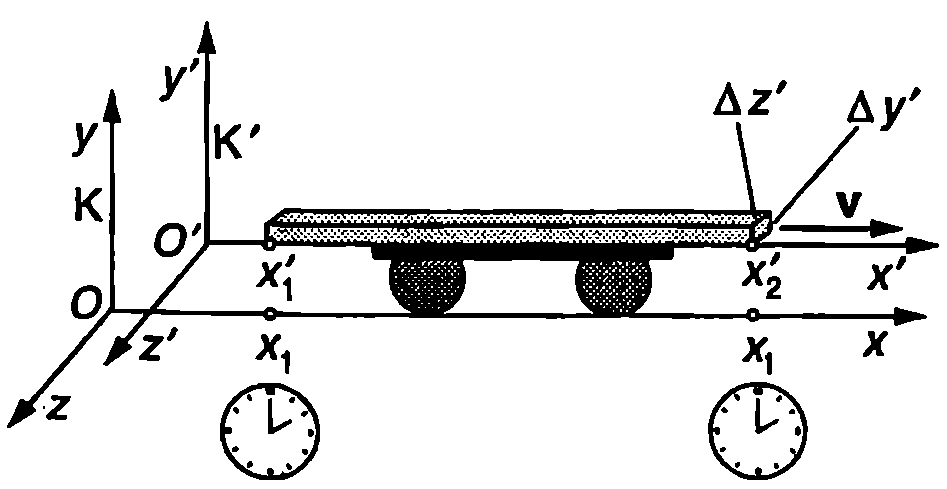
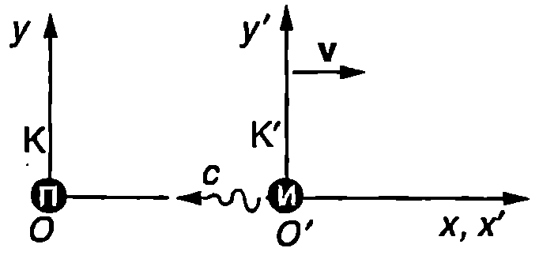

Лоренцово скъсяване
Пръчка е в покой спрямо инерциалната отправна система K’ (Фиг. \ref{fig:98.1}). Наблюдател от K’ може да измери дължината $L_0 = \Delta x’ = x’_2 - x’_1$ на пръчката например с линийка. Ще обърнем внимание, че по време на измерването линийката и пръчката са неподвижни една спрямо друга. Величината $L_0$ се нарича собствена дължина на пръчката.
За наблюдател от отправната система K пръчката се движи със скорост $v$ (Фиг. \ref{fig:98.1}). Как да се измери дължината на движеща се пръчка? Да си представим следния “мислен опит”. Неподвижно спрямо K-системата (например край магистралата, по която се движи пръчката) са разположени един до друг голям брой еднакви часовници, синхронизирани по правилото на Айнщайн. До всеки часовник стои джудже с молив в ръка. Джуджетата гледат часовниците си и в даден момент (например точно в 12 часа) две от тях, покрай които в този момент преминават двата края на пръчката, отбелязват върху асфалта точките $x_1$ и $x_2$ съвпадащи с двата края. След това разстоянието между двата белега се измерва с линийка. По определение дължината $L$ на движеща се спрямо отправната система K пръчка е равна на разстоянието между две точки от K-системата, покрай които краищата на пръчката преминават едновременно: $L = \Delta x = x_2 - x_1$. За да намерим връзката между $L$ и $L_0$ ще използваме лоренцовите трансформации \eqref{eq:97.3}. В уравнението $\displaystyle \Delta x’ = \frac{\Delta x - v\Delta t}{\sqrt{1 - \frac{v^2}{c^2}}}$ полагаме $\Delta x’ = L_0$, $\Delta x = L$ и $\Delta t = 0$ (Двете събития — отбелязването на точките $x_1$ и $x_2$ в отправната система K са станали едновременно, т.е. времевият интервал между тях е $\Delta t = 0$). Тогава

`Фиг. 98.1`
$$\begin{aligned} L_0 = \frac{L}{\sqrt{1 - \frac{v^2}{c^2}}} \text{ или } L = L_0 \sqrt{1 - \frac{v^2}{c^2}}. \end{aligned} $$
От полученото уравнение следва, че дължината на движеща се пръчка е по-малка от нейната собствена дължина. Този релативистки ефект се нарича лоренцово скъсяване. Той не е породен от сили, които свиват тялото в направление на движението: в тялото не възникват механични деформации. Ще отбележим, че напречните размери на пръчката, които са перпендикулярни на посоката на движение, не се изменят:
$$\Delta y’ = \Delta y;\ \Delta z’ = \Delta z$$
Тъй като напречните размери не се променят, обемът $V$ на движещо се тяло се изменя, както линейният размер в направление на движението, т.е. $$\begin{aligned} V = V_0 \sqrt{1 - \frac{v^2}{c^2}} , \end{aligned} $$ където $V_0$ е собственият обем на тялото, измерен в отправната система, в която то е в покой.
Пример 98.1
Космически кораб на извънземна цивилизация се приближава към Слънчевата система със скорост $v = c/3$. Собствената дължина на кораба е $L_0 = 500$ m. Колко метра е дълъг корабът за наблюдател от Земята? \end{psexample}
Решение
$$L = L_0 \sqrt{1 - \frac{v^2}{c^2}} = \frac{2\sqrt{2}}{3} L_0 = 471~\mathrm{m}$$
Забавяне на времето
Последното от уравненията \eqref{eq:97.3} на стр. 234 изразява връзката между интервалите от време $\Delta t$ и $\Delta t’$ между две събития, измерени в различни инерциални отправни системи (K и K’). Обратната трансформация се получава, като в това уравнение $v$ се замести с $-v$: $$\begin{aligned} \Delta t = \frac{\Delta t’ + \frac{v\Delta x’}{c^2}}{\sqrt{1 - \frac{v^2}{c^2}}}. \end{aligned} $$
Да разгледаме две събития, станали в една и съща точка $A$ от отправната система K’. За тях $\Delta x’ = 0$. За наблюдател от отправната система K същите събития са станали в различни точки. Връзката между интервалите от време между събитията, измерени в двете отправни системи, се изразява с уравнение \eqref{eq:98.3}, където трябва да се положи $\Delta x’ = 0$ и $\Delta t = \Delta t_0$: $$\begin{aligned} \Delta t = \frac{\Delta t_0}{\sqrt{1 - \frac{v^2}{c^2}}}. \end{aligned} $$
От уравнение \eqref{eq:98.4} следва, че $\Delta t > \Delta t_0$, т.е. интервалът от време между двете събития е минимален в инерциалната отправна система, спрямо която събитията са станали в една и съща точка. Този релативистки ефект често се нарича забавяне хода на движещия се часовник. Откъде идва това название?
Ще разгледаме следния пример. Часовник е поставен в ракета (отправна система K’), която се движи със скорост $v = c/2$ спрямо Земята (отправна система K). В даден момент секундната стрелка преминава през точка $A$ от циферблата (събитие 1). След това тя извършва една пълна обиколка и отново преминава през точка $A$ (събитие 2). За наблюдател от ракетата двете събития са станали в една и съща точка. Интервалът от време между тях е $\Delta t_0 = 60$ s. За наблюдател от Земята часовникът се движи и двете събития са станали в различни точки. Интервалът от време между тях се определя по формула \eqref{eq:98.4}, в която полагаме $v = c/2$: $$\Delta t = \frac{2\sqrt{3}}{3} \Delta t_0 \approx 69~\mathrm{s}.$$
Следователно движещият се часовник върви по-бавно (забавя своя ход). В конкретния случай, докато според часовника от ракетата изминат 60 s, неподвижните часовници на Земята ще отчетат време 69 s. Времето, което измерва часовник, движещ се заедно с даден обект, се нарича собствено време за обекта. Колкото по-бързо се движи обектът, толкова по-бавно тече неговото собствено време в сравнение с времето, измервано от неподвижен наблюдател. Забавят се също всички физични, химични и биологични процеси.
Пример 98.2
Мю ($\mu$)-мезоните са частици, които се пораждат от космичните лъчи в горните слоеве на атмосферата. Те са нестабилни и след известно време се разпадат на други частици. Установено е, че $\mu$-мезони, които са в покой, живеят средно $\Delta t_0 = 2,!2 \times 10^{-6}$ s.
а) Колко секунди е време на живот $\Delta t$ на $\mu$-мезоните за наблюдател от Земята?
б) Ще достигнат ли $\mu$-мезоните до земната повърхност преди да се разпаднат?
Приемете, че $\mu$-мезоните се създават на височина $10000$ m и имат скорост $0,!999c$, където $c$ е скоростта на светлината. \end{psexample}
Решение
а) $\Delta t_0$ е собственото време на живот на $\mu$-мезоните, измерено в отправна система $K’$, спрямо която те са в покой. Спрямо Земята (отправна система $K$) $\mu$-мезоните се движат със скорост $v = 0,!999c$, поради което средното време на живот, измерено от земния наблюдател, е по-голямо. То се определя от уравнение \eqref{eq:98.4}: $$\Delta t = \frac{\Delta t_0}{\sqrt{1 - \frac{v^2}{c^2}}} \approx 4,!92 \times 10^{-5}~\mathrm{s} \approx 22 \Delta t_0.$$
Следователно поради релативисткия ефект на забавяне на времето, за земния наблюдател $\mu$-мезони, които се движат със скорост близка до скоростта на светлината, живеят средно $22$ пъти по-дълго, отколкото $\mu$-мезони, движещи се с нерелативистки скорости.
б) За наблюдател от Земята $\mu$-мезоните се движат със скорост, която практически е равна на скоростта на светлината $c$. За време $\Delta t$ те изминават разстояние $$L = c \Delta t = 3 \approx 14800~\mathrm{m}.$$
“Средният” $\mu$-мезон, който “живее” време $\Delta t$, ще достигне земната повърхност преди да се разпадне. Ако не съществуваха релативистки ефекти, той би изминал само $$L_1 = c \Delta t_0 = 660~\mathrm{m}.$$
Полученият резултат се потвърждава от опитите с $\mu$-мезони, които са едно от многобройките доказателства за правилността на релативистката теория.
Ефект на Доплер
Нека в началото $O$ на отправната система $K$ е поставен приемник П на светлинни импулси. Техният източник И се движи с постоянна скорост $\vec v$ спрямо приемника. С него ще свържем втора инерциална отправна система $K’$ (Фиг. \ref{fig:98.2}). Източникът излъчва къси светлинни импулси през интервал от време $\Delta t_0$ (собствено време между импулсите, измерено в отправната система $K’$, спрямо която източникът е в покой). Съгласно с уравнение \eqref{eq:98.4} интервалът между импулсите, измерен в отправната система $K$, е $\displaystyle \Delta t = \frac{\Delta t_0}{\sqrt{1 - \frac{v^2}{c^2}}}$. За време $\Delta t$ източникът се отдалечава на разстояние $\Delta x = v\Delta t$. Затова всеки следващ импулс изминава допълнително разстояние $\Delta x$ преди да достигне приемника, т.е. той се движи $\Delta x/c = v\Delta t/c$ секунди по-дълго време в сравнение с предшестващия го импулс. Следователно приемникът ще регистрира два последователни импулси през интервал от време $$T = \Delta t + \frac{v\Delta t}{c} = \left(1 + \frac{v}{c}\right)\Delta t. $$ Заместваме $\Delta t$ и получаваме $$T = \frac{\Delta t_0\left(1 + \frac{v}{c}\right)}{\sqrt{1 - \frac{v^2}{c^2}}} = T_0 \sqrt{\frac{1 + \frac{v}{c}}{1 - \frac{v}{c}}}, $$

`Фиг. 98.2`
където $T_0 = \Delta t_0$ е собственият период (период на излъчване на импулсите, измерен в отправна система, в която източникът е в покой). Честотата на приемане на периодичните сигнали $\nu = 1/T$ е свързана със собствената честота $\nu_0 = 1/T_0$ на излъчване на източника с уравнението $$\nu = \nu_0 \sqrt{\frac{1 - \frac{v}{c}}{1 + \frac{v}{c}}} $$ Ако източникът се приближава към приемника, в уравнение \eqref{eq:98.7} трябва $v$ да се замени с $-v$, тъй като скоростта $v$ на източника е променила посоката си: $$\nu = \nu_0 \sqrt{\frac{1 + \frac{v}{c}}{1 - \frac{v}{c}}} $$ Уравнения \eqref{eq:98.7} и \eqref{eq:98.8} описват изменението на честотата на електромагнитните вълни при преминаване от една инерциална отправна система в друга такава (релативистки ефект на Доплер). Получихме тези формули за случая, когато се движи източникът, а приемникът е неподвижен. Съгласно с принципа на относителността същите уравнения трябва да са в сила, когато се движи приемникът. В тях под $v$ трябва да се разбира относителната скорост на движение на приемника и източника един спрямо друг.
От уравнение \eqref{eq:98.7} следва, че $\nu < \nu_0$, т.е. когато източникът и приемникът се отдалечават един от друг, приемникът регистрира по-ниска честота (по-голяма дължина на вълната $\lambda = c/\nu$). Този ефект се нарича червено отместване, тъй като поради ефекта на Доплер приетите светлинни сигнали са “отместени” към дълговълновата (червена) част на спектъра. Обратно, ако източникът и приемникът се приближават, наблюдава се виолетово отместване. В този случай съгласно с уравнение \eqref{eq:98.8} $\nu > \nu_0$, т.е. става доплерово отместване към високочестотната (късовълнова) част на спектъра, където за видимата светлина се намира виолетовият цвят.
От приведения елементарен извод на релативисткия ефект на Доплер става ясно, че той се определя от два фактора: 1. изменението на разстоянието между източника и приемника; 2. преобразуването на интервалите от време при преминаване от една отправна система в друга такава. Първият фактор, който няма отношение към теорията на относителността, води до т.н. класически ефект на Доплер. Класическият акустичен ефект на Доплер е разгледан в~\ref{sec:81}. При движение с малки скорости ($v/c \ll 1$), уравненията на релативисткия ефект на Доплер преминават в уравненията за класическия ефект на Доплер, получени в \ref{sec:81}. Действително, като се използва приближението) $({1 + x})^n \approx 1 + nx$ при $|x| \ll 1$, например уравнение \eqref{eq:98.7} се записва във вида $$\begin{aligned} \nu &= \nu_0 \sqrt{\frac{1 - \frac{v}{c}}{1 + \frac{v}{c}}} \approx \ &\approx \nu_0 \sqrt{(1 - \frac{v}{c}) (1 + \frac{v}{c})} =\nu_0 (1 - \frac{v}{c}), \end{aligned} $$ т.е. получава се уравнението \eqref{eq:81.2} на стр.161 за класическия ефект на Доплер.
Разгледаният пример още веднъж ни убеждава, че при движение със скорости, много по-малки от скоростта на светлината, релативистките закономерности преминават в закономерности от класическата физика. Изискването една по-обща теория (например теорията на относителността) да съдържа в себе си като частен (граничен) случай друга по-ограничена теория (например нютоновата механика), се нарича принцип на съответствието. Теорията на относителността не отхвърля класическата механика, а я включва в себе си като граничен случай, отнасящ се за движения с малки скорости спрямо скоростта на светлината във вакуум.
Пример 98.3
Далечна галактика излъчва светлина с честота $\nu_0$. Поради ефекта на Доплер наблюдател от Земята регистрира честота $\nu$. Каква е скоростта на галактиката, ако $\nu/\nu_0$ = 0,95? \end{psexample}
Решение
Галактиката се отдалечава от Земята, защото честотата $\nu$, която регистрира земният наблюдател, е по-малка от собствената честота на излъчване $\nu_0$. Наблюдава се ефект на червено отместване, свързан с разбягване на галактиките''. (Съгласно с теорията на Големия взрив” Вселената се разширява и всички галактики се отдалечават една от друга.)
Тъй като изменението на честотата не е голямо, ще използваме уравнение \eqref{eq:98.9} за ефекта на Доплер в класическо приближение $\displaystyle\nu = \nu_0(1 - \frac{v}{c})$, откъдето определяме скоростта на галактиката: $$v = c(1-\frac{\nu}{\nu_0}) = 0,!05c = 1,!5.10^7~\mathrm{m/s}.$$
Задачи
-
На екипажа на междузвезден космически кораб се плаща в зависимост от времето, прекарано в космоса. Кое е по-изгодно за космонавтите — да вземат със себе си счетоводителя, който пресмята заплатите им, или да го оставят на Земята?
-
Космически кораб се отдалечава от Земята със скорост $v$. За наблюдател от Земята дължината на кораба е 2 пъти по-малка от неговата собствена дължина. Колко е скоростта $v$?
-
В научнофантастичен разказ се описва междузвезден полет, при който космическият кораб се отдалечава от Земята със скорост $0.9c$. За космонавтите полетът продължава 5 години. Колко години са изминали на Земята?
-
Единият от двама братя близнаци тръгва на пътешествие в космоса, а другият остава на Земята. При каква скорост на ракетата космонавтът ще остарява 3 пъти по-бавно от брат си?
-
Правоъгълен триъгълник има катети с дължини $x = 6$ cm и $y = 5$ cm. С каква скорост трябва да се движи триъгълникът в направление на катета $x$, така че за наблюдател от лабораторната отправна система той да е равнобедрен?
-
Две частици се движат в лабораторната отправна система по права линия в една и съща посока с еднаква скорости $v = 0,!75c$ и попадат в неподвижна мишена през интервал от време $\Delta t = 20$ ns. Колко метра е разстоянието между частиците преди попадането в мишената: а) в лабораторната отправна система: б) в отправната система, в която те са неподвижни (собствено разстояние)?
-
Мотоциклетист, който пресича кръстовище на червен светофар ($\lambda_\text{ч} = 650$ nm), опитва да се оправдае пред полицейския патрул, че поради доплеровото отместване видял светофара да свети зелено ($\lambda_\text{з} = 550$ nm). Полицаят веднага му съставя акт за скорост: да заплати толкова лева, колкото пъти е превишил максималната допустима скорост от $60$ km/h. Колко лева трябва да плати хитрецът?